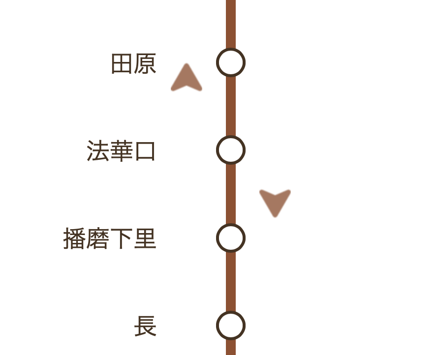

このサイトは？
列車のリアルタイムの走行位置を表示するサイト。
列車が走行している場合、走行位置にとんがりマークを表示する。

注意点
※走行位置は時刻表を基にマッピングしており、実際の走行位置ではなく、おおよその位置を表しております。
※運行状況により、実際の状況と大きく異なる場合があります。ご注意下さい。
※一部の列車（臨時列車、時刻変更列車など）は表示されない場合があります。
※列車が走行していない時間帯はとんがりマークは表示されません。
※ブラウザによっては正しく表示されない場合があります。
※本サイトのコンテンツやURLを予告なしに変更または、公開を中止する事があります。
※理由の如何に関わらず、発生した損害に対して責任を負うものではありません。
問い合わせ
何かお気づきの点などございましたら、以下にご連絡下さい。
ask.tomlab@gmail.com